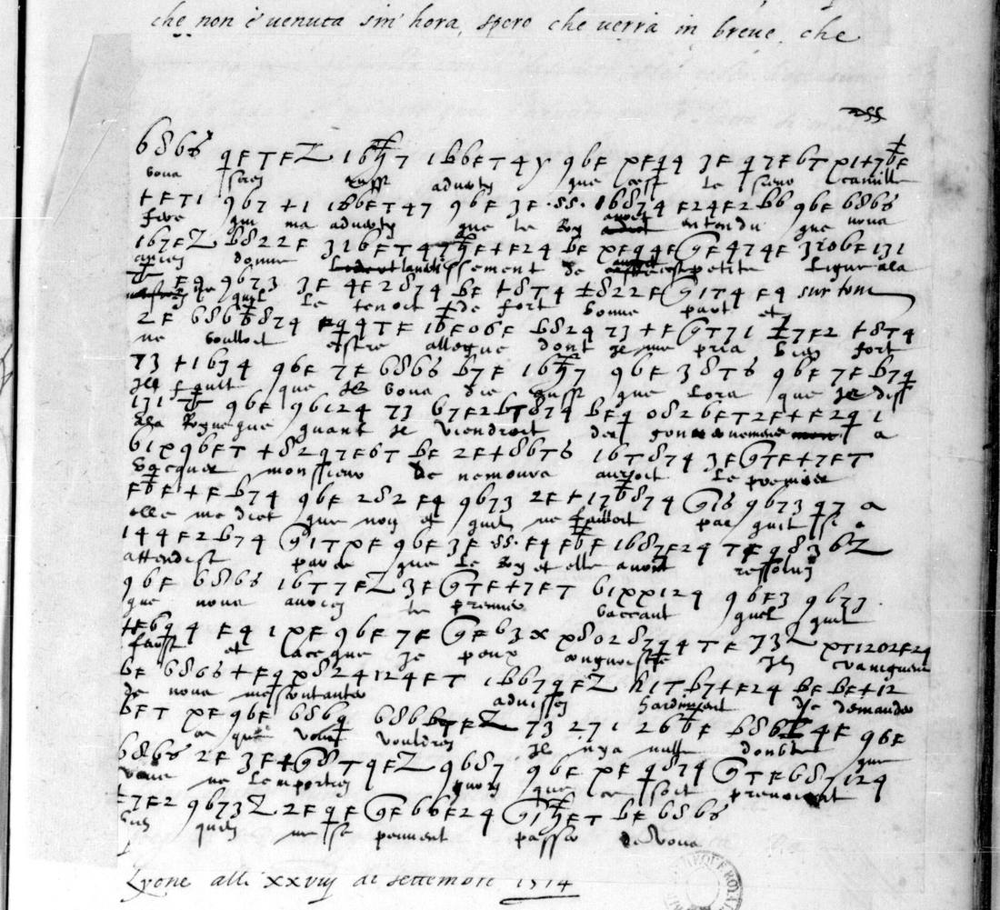
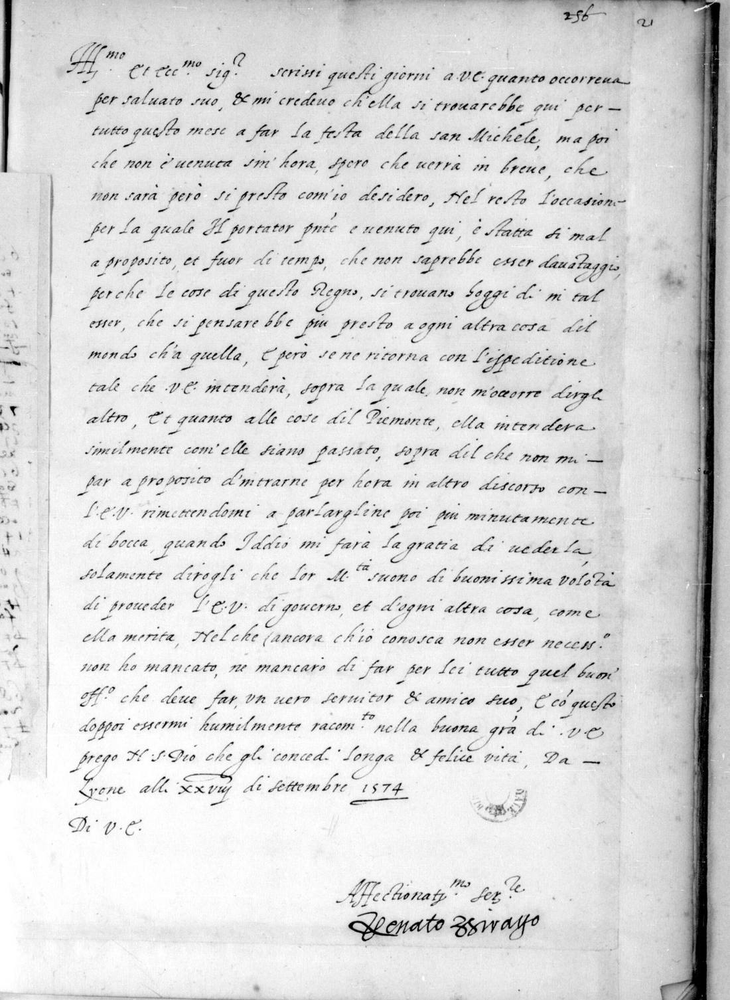
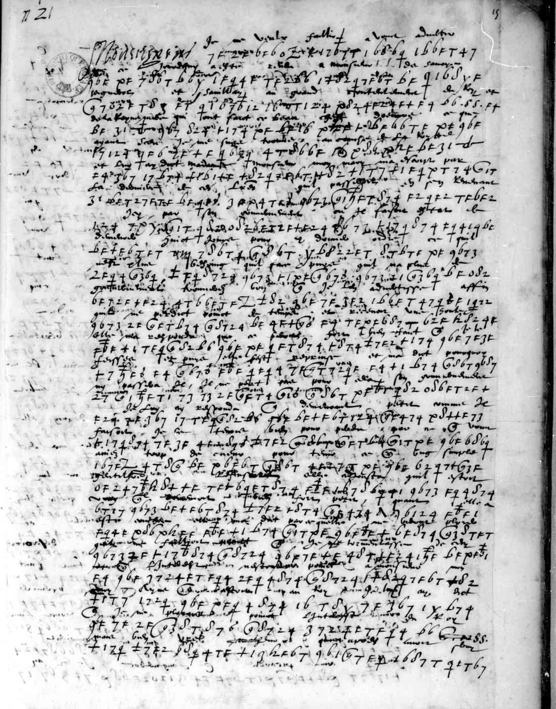
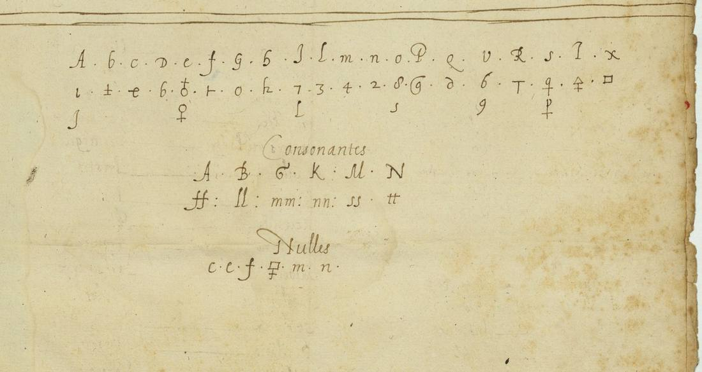

01 What was found on the openings
The Gallica viewer’s sequence obscures the physical arrangement. Image f17 shows manuscript f. 15r, and f18 shows its verso next to a clear ending on f. 16r. Image f23 shows f. 21r with Birago’s pale cipher flap covering much of the Italian fair copy. In image f24 the flap is folded away, revealing the whole clear text on the same recto. The next image is the verso and bleed-through, not another ciphertext.


02 Birago’s letter, 28 September
Birago had expected Nevers at Lyon throughout the month for the feast of St Michael. Since he has not come, Birago hopes to see him shortly, though not as soon as he would like. The bearer’s purpose has come at a bad time: affairs of the kingdom are such that virtually anything else would be considered before it. He therefore returns with the dispatch that will make the answer clear.
Et quanto alle cose dil Piemonte, ella intenderà similmente com’elle siano passate … rimettendomi a parlargliene poi più minutamente di bocca, quando Iddio mi farà la gratia di vederla.
Birago will not commit the Piedmont business to a fuller written discussion. He adds that Their Majesties are very willing to provide Nevers with a governorship and every other thing he deserves, and that he has done and will continue to do every good office of a true servant and friend. A semi-diplomatic transcription of the whole leaf is in nevers1574/f21_transcription.md; only one short expression in the first sentence remains uncertain.
03 Henriette de Clèves, 16 September [1574]
The cipher fills two dense pages. Above almost every run, however, a smaller contemporary hand has supplied its plaintext. The letter opens:
Monseigneur, je ne veulx faillir à vous donner …
The outer address is clear: A Monsieur, Monsieur le duc de Nevers, pair de France. The cipher runs to the foot of f. 15v and then gives way to a clear ending on the adjacent f. 16r. The writer says it is midnight, her eyes hurt from weeping, she wishes herself in paradise rather than suffer the way they are being made to suffer, and asks God to grant her “bon frère” patience. The closing reads “De Lyon ce 16 de septembre”; the year 1574 is inferred from the archival setting. A superficially similar appeal of Henri III to the duchess printed by Lavisse belongs to an earlier occasion, before his departure for Poland, and cannot serve as a crib for this letter.

04 A related key of 1584
Tomokiyo observed that ff. 15 and 21 do not use the Nevers key copied at ff. 12–13. They closely resemble Nevers collection no. 2, issued a decade later in 1584 and preserved in BnF fr. 3995 f. 16, but differ in decisive assignments: on the 1574 leaves F is e, 9 is q, and x, y and z are left in clear. The 1584 table therefore shows the design of the system (an alphabet of graphic signs, special signs for doubled consonants, and nulls), but it cannot be applied to this text as it stands.

No solver output is reported. The manuscript’s interlinear decipherment and clear fair copy are better evidence than any solver output, and the way to rebuild the key is to align the f. 21 signs with the Italian gloss directly above them.
05 What remains
- F. 15 continuous transcription (grade I for the middle not yet transcribed). The small French is locally faded and repeatedly crossed by the larger signs. Enlarged overlapping crops recovered the opening (H), and f. 16r preserves the ending (H), but most of the ciphered middle still lacks a reliable line-by-line transcription.
- The exact 1574 alphabet. It can probably be rebuilt by aligning the signs and interlinear Italian decipherment on f. 21. The folded cipher slip needs glyph-level alignment; the 1584 key cannot simply be substituted. The full clear copy is used as context; it is not assumed to match the cipher letter for letter.
- One phrase on f. 21 (grade I). The fair copy appears to write per saluato suo; it may contain a personal name or abbreviation. The rest of the clear copy is transcribed at grade H.
06 Sources
- Bibliothèque nationale de France, français 3315, ff. 15 and 21, Gallica btv1b90600800.
- BnF français 3995, f. 16, Nevers collection no. 2.
- Satoshi Tomokiyo, “Ciphers of the Duke of Nevers,” Cryptiana, section BnF fr. 3315.
- Ernest Lavisse, Histoire de France depuis les origines jusqu’à la Révolution, VI.1 (checked and excluded as a crib).
Images, full transcription of f. 21, partial transcription of f. 15, work log and structured profile: nevers1574/.